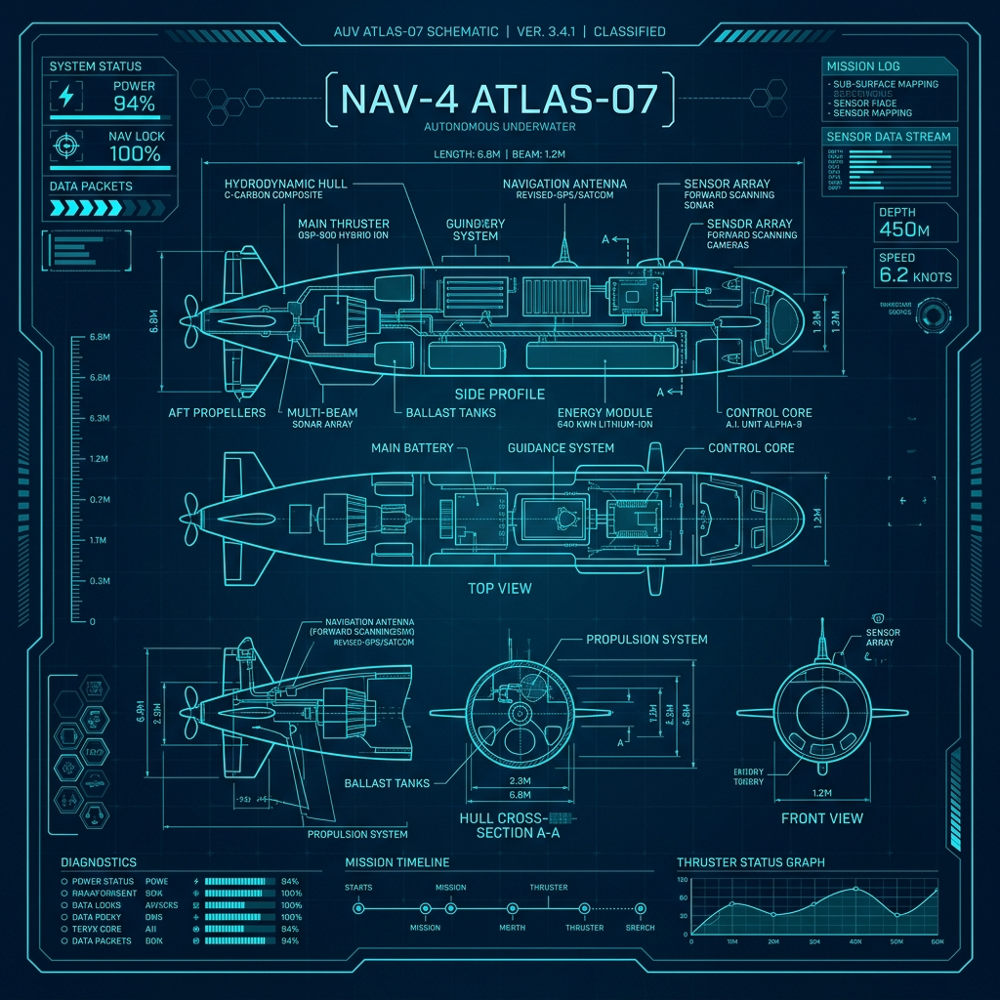

Derinliklerin
Otonom Gücü
Teknofest İnsansız Sualtı Sistemleri Yarışması için tasarlanan, 6 bağımsız iticisi ve gelişmiş otonom yapay zekasıyla sınırları aşan sualtı aracımızla tanışın.
Hakkımızda
Görevimiz, sualtı teknolojilerinde yerli ve milli çözümler üretmek.
Misyonumuz
Teknofest yarışmasında takımımızı en iyi şekilde temsil ederek, otonom sualtı araçları alanında yenilikçi ve görev odaklı sistemler geliştirmek.
Vizyonumuz
Türkiye'nin sualtı robotiği ve deniz bilimleri çalışmalarına teknolojik altyapı sağlayacak ileri seviye otonom sistemlerin öncüsü olmak.
Ekibimiz
Mühendislik disiplinlerini bir araya getiren dinamik, tutkulu ve teknolojiye gönül vermiş gençlerden oluşan güçlü bir aileyiz.
Teknik Özellikler
Zorlu sualtı görevleri için üstün mühendislik tasarımı.

6 Thruster (İtici) Sistemi
Tam bağımsız 6 vektörel itici ile 6 eksende (DOF) kusursuz manevra ve yüksek itki gücü. Akıntıya karşı maksimum stabilite.
Otonom Görev Sistemleri
Gelişmiş görüntü işleme ve yapay zeka algoritmaları sayesinde dışarıdan müdahale olmadan görevleri algılama ve tamamlama.
Gelişmiş Kamera Sistemi
Düşük ışık koşullarında dahi yüksek çözünürlüklü sualtı görüntüleme ve nesne tespiti sağlayan optik sensörler.
Derinlik Kapasitesi
Yüksek basınç dayanımlı gövde tasarımı ile zorlu derinliklerde güvenli ve sızdırmaz operasyon yeteneği.
Ekibimiz
Akana Robotics projesini hayata geçiren yetenekli ekibimiz.
Nisa Özpehlivan
Takım Kaptanı
Ne İşle Uğraşıyor?
Otonom görev kodlarının tasarımından, tüm alt sistemlerin teknik entegrasyonundan ve 12 kişilik ekibin koordinasyonundan sorumludur.
Ahmet Doğru
Yazılım Takım Kaptanı
Ne İşle Uğraşıyor?
Ana algoritma ve akış diyagramlarının tasarımı ile sistem entegrasyonu süreçleri üzerinde çalışmaktadır.
İbrahim Kasım Kadıoğlu
Yazılım Takım Üyesi
Ne İşle Uğraşıyor?
Otonom hareket yazılım tasarımcısı olarak aracımızın görev yönetimi ve sensör iletişimleri üzerine çalışıyorum.
Berat Ediş
Yazılım Takım Üyesi
Ne İşle Uğraşıyor?
Ana araç - Mini ROV haberleşme altyapısının kurulması, veri aktarım protokollerinin geliştirilmesi ve yer istasyonu kullanıcı arayüzünün (GUI) tasarlanması üzerine çalışmaktadır.
Selva Aksu
Yazılım Takım Üyesi
Ne İşle Uğraşıyor?
Su altı görüntü işleme algoritmaları, derin öğrenme ve nesne tespiti üzerine çalışmaktadır.
Abdullah Furkan Tural
Elektronik Takım Kaptanı
Ne İşle Uğraşıyor?
Akana takımı Elektronik Kaptanı olarak; Otonom su altı araçlarımız için devre tasarımı, güç elektroniği ve gömülü sistem mimarileri üzerine çalışıyorum.
Ali Sekmen
Elektronik Takım Üyesi
Ne İşle Uğraşıyor?
Elektronik bölümündeyim PCBnin fiziksel birleşimi şablon detaylandırması gibi işleri yapiyorum.
Kürşat Kavukluoğlu
Elektronik Takım Üyesi
Ne İşle Uğraşıyor?
Elektrik bölümünde şema çizimi ve rapor hazırlama üzerine çalışıyorum.
Abdullah Enes Gülerli
Elektronik Takım Üyesi
Ne İşle Uğraşıyor?
Elektronik bölümdeyim elektronik şemanının birleştirilmesi ve komponentlerin testleri üzerinde uğraşıyorum.
Mert Emir Gültekin
Mekanik Takım Kaptanı
Ne İşle Uğraşıyor?
Su altı sızdırmazlık sistemleri (O-ring, flanş) ve donanım yerleşimi üzerine çalışmaktadır.
Ömer Faruk Güler
Mekanik Takım Üyesi
Ne İşle Uğraşıyor?
Robotun iç/dış 3D gövde tasarımı (CAD) ve malzeme seçimi üzerine çalışmaktadır.
Merve Gökalp
Mekanik Takım Üyesi
Ne İşle Uğraşıyor?
3 boyutlu sanal modelleme ve basılacak parçaların tasarım optimizasyonları üzerine çalışmaktadır.
Mustafa Zurnacı
Mekanik Takım Üyesi
Ne İşle Uğraşıyor?
Su altı sızdırmazlık güvencesinin sağlanması, 3D yazıcı ile yapısal parça imalatı ve takımın web sitesinin tasarlanıp yönetilmesinden sorumludur.
Bize Ulaşın
Destek olmak, sponsorluk görüşmeleri veya daha fazla bilgi için iletişim kurun.
İletişim Bilgilerimiz
Konum
E-Posta
akanaauv@gmail.com Kopyalandı!